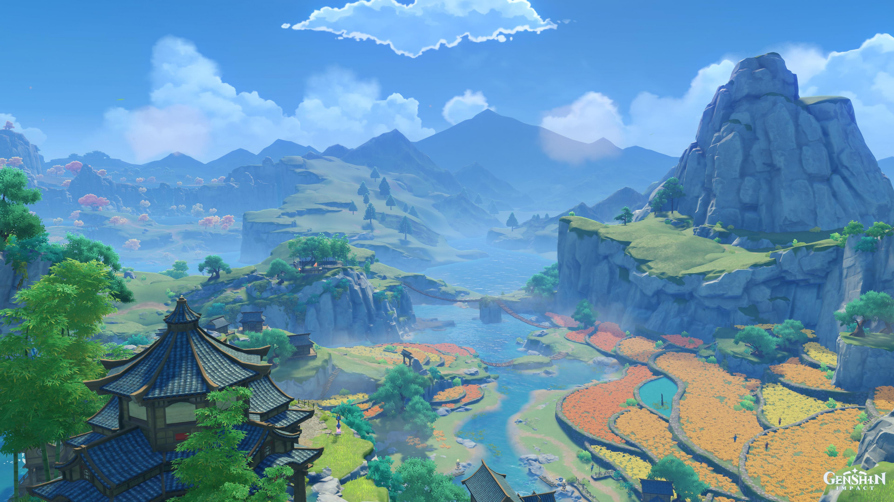
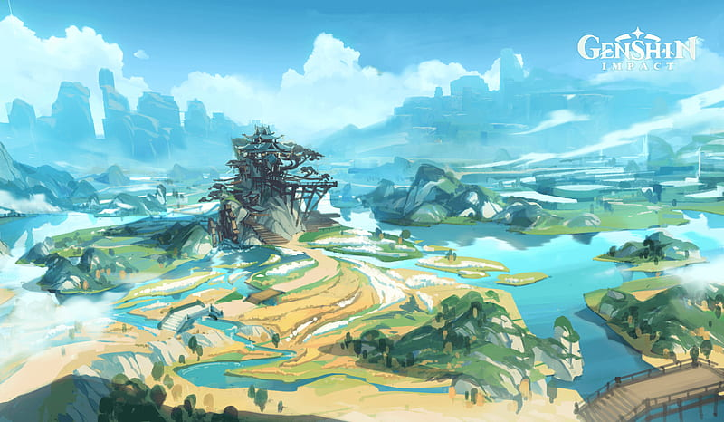
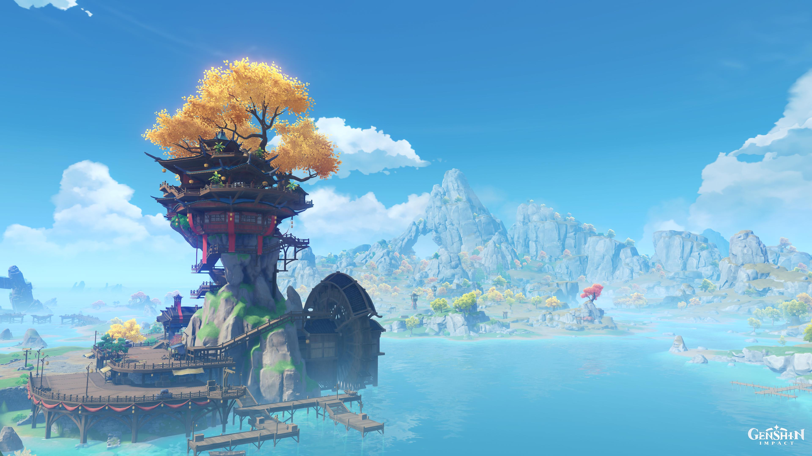
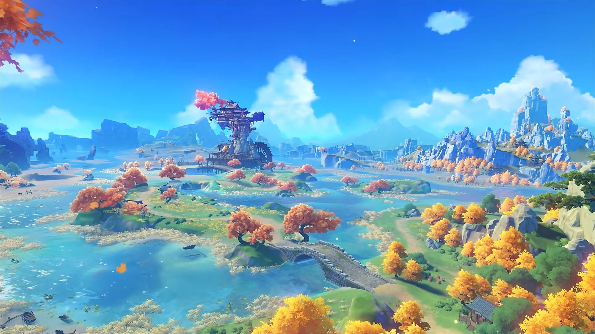
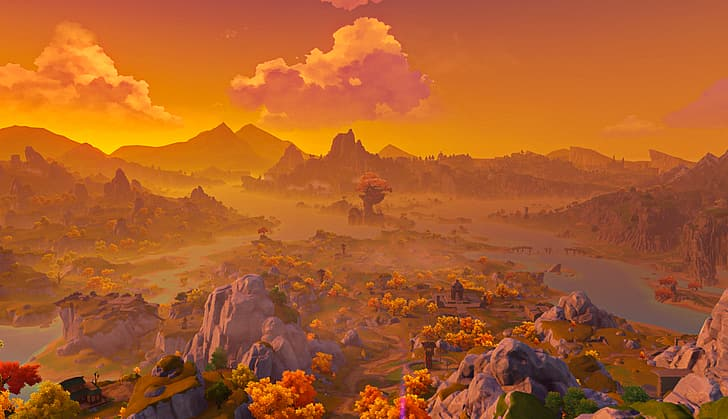
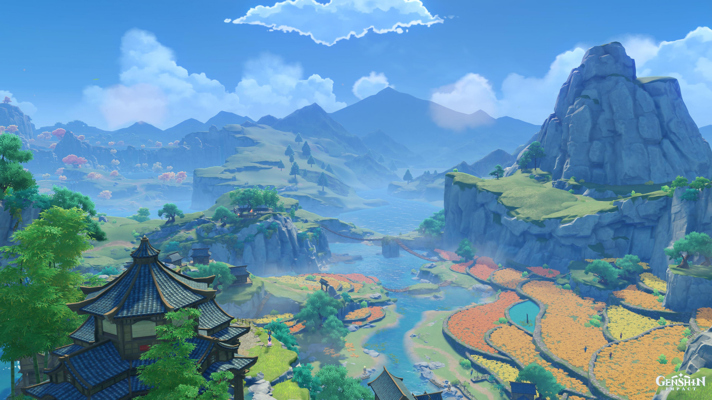
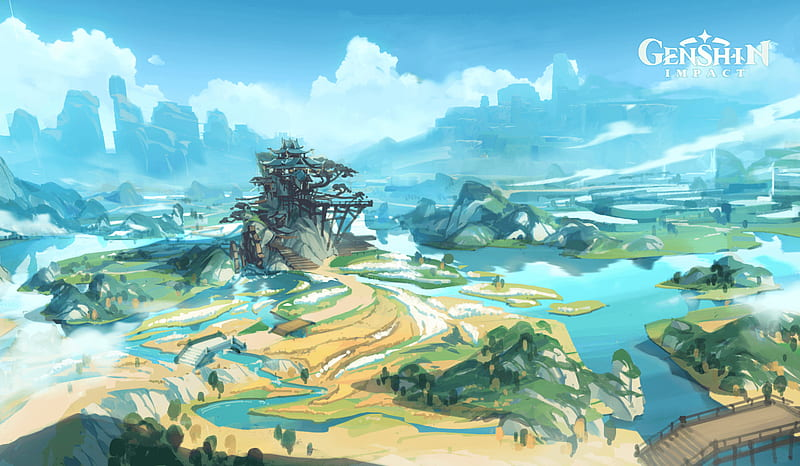
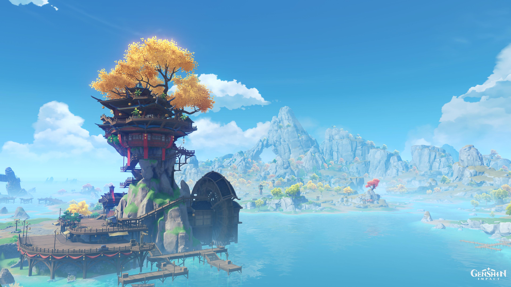
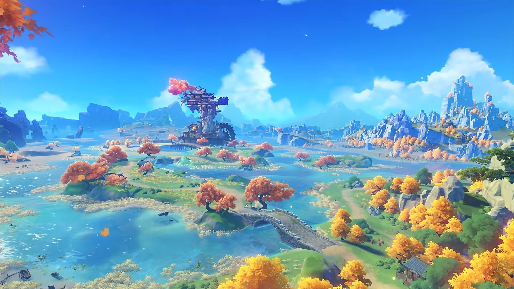
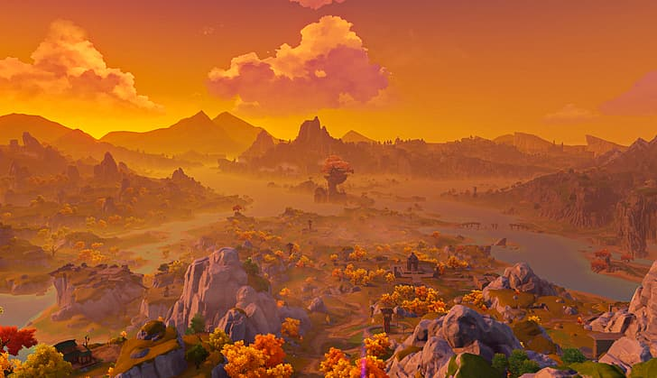

Genshin Impact is a game developed by Mihoyo, a company based in Shanghai, China. It is an open-world action-based role playing game set in a fictional world called Teyvat.
Nations in Genshin Impact are heavily influenced by real world countries. Liyue is inspired by China where many locations are mirrored off of real-world Chinese scenery and attractions.
Access to Liyue is unlocked after completing the Archon Quest Prologye: Act I - The Outlander Who Caught the Wind.
Sceneries
Liyue Harbor
The establishment of the harbor kicked off Liyue's seafaring trade. As Teyvat's largest market harbor, the sheer amount of goods that flow to and from it is simply incomparable for other ports. Every year during the Lantern Rite you can see thousands of lanterns ascend into the night sky — a Liyue event that you can't afford to miss.
Mt. Tianheng
The pride of the mountain range that shelters Liyue Harbor from the west, acting as a natural shield against any enemies that may come that way. There are uncountable records of wars both big and small whereby enemies have been blocked by this barrier. As such you can still see ancient ruins of city walls, forts, and defensive structures. Liyue's earliest mining operations are also believed to have started in this area.
Wangshu Inn
A landmark within Dihua Marsh, built upon a massive stone pillar. As most of the patrons that stop here are traveling merchants, the inn provides an area for them to trade and set up stalls. The view from the top of the inn is jaw-dropping — weather permitting you can see all the way to Mt. Qingce and Jueyunjian in the distance. Legend amongst the stalls says that the tower of the inn hides a mysterious secret, but that's as far as the legend goes, as no one has ever been able to verify the claims.